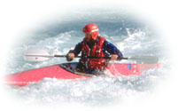
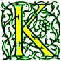
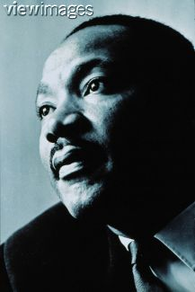
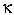

Signs for technical/specialized vocabulary
David Bar-Tzur
Links updated monthly with the help of LinkAlarm.


Kajak1; Martin Luther King Jr.2
EXPLANATION OF THE GLOSSING SYSTEM
(to understand how I describe the signs in this dictionary).
For content knowledge of how to use the physics terms in context, see Guided tutorial in physics for interpreters.
For negotiating and developing temporary signs, see Preparation and sign negotiation
For vocabulary lists to determine helpful signs for a specific discipline, see Vocabulary lists by topic.
- Ka'bah
- (2h)[O^], DH PO down, NDH PO up, NDH stays in place and DH revolves around it like worshippers walking around the Ka'bah.
- Kabbalat Shabbat
- PRAY, WELCOME SABBATH.
- Kaddish
- MOURN PRAYER.
- kadosh
- (1) SEPARATE. (2) SPECIAL. (Heb) "holy." Set aside for the purpose of interacting with God or gods.
- kahal
- (1) (2h)5:-CL'congregation seated and facing signer'. (2) (2h)5:-CL'congregation seated and seen from behind'.
- kajak
- (1) #KAJAK is a lexicalized fingerspelling that looks like K-J-K, but stays in place, rather than moving slightly > DS, like regular fingerspelling. (2) (2h)[S], POs down, FOs away, hold an imaginary kajak paddle and make alt. strokes that would describe very small rapid vertical circles on each side. Hands twist at the wrists as if holding this paddle.
- kajaking
- (1) (2h)[S], POs down, FOs away, hold an imaginary kajak paddle and make strokes that would describe broad vertical circles on each side. Hands twist at the wrists as if holding this paddle. (2) (2h)[S], POs down, FOs away, hold an imaginary kajak paddle and make two strokes on DS then two strokes on NDS. Hands twist at the wrists as if holding this paddle.
- kaleidoscope
- FOCUS VAGUE For a QuickTime movie of this sign, see ASL browser - kaleidoscope.
- kallah
- GIRL~WEDDING.
- kallat Breishit
- HONOR HOW? READ FIRST PART TORAH.
- kallat Torah
- HONOR HOW? READ LAST PART TORAH.
- kaon (K+, K-, or K0)
- (1) "K" + POSITIVE'superscripted". (2) "K" + NEGATIVE'superscripted". (3) "K" + ZERO'superscripted".
- kapora
- (1) EXCUSE. (2) EXCUSE is signed the normal way for the person's hand dominance and then the sign is executed as if the person had the opposite hand dominance.
- Kaposi's sarcoma
- (1) PURPLE + a modified C that tucks in the ring and little finger is placed to show lesions on the forearm and cheek + SKIN EAT-AWAY, where last sign is [5:] touches FT to palm of [B], PO > DS, FO up, and DH closes and opens as is travels up the palm, as if taking smalll bites of it, while gnashing the teeth with each bite. (2) K-S.
- kappa ()
- Draw the shape of the letter in the air with the index finger.
- karate
- (1) (2h)[3:], POs away, FOs up, circle vertically in one rapid movement. (2) (2h)[B], circle each other, with DH ending forward with FO up. (3) (2h)[B] mime karate moves. For a QuickTime movie of this sign, see ASL browser - karate.
- karma
- (1) LIFE CYCLE"sta, sta, sta" LAW. (2) Sign starts out like BRIBE but the DH opens, then closes and returns to the chest, this time above the NDH and strikes the chest. (< what you give out comes back to you)
- karuv (pl. k'ruvim)
- ANGEL CLOSE-TO GOD.
- karyotype
- ~ (n)
- CHROMOSOME, IDENTIFY"each".
- ~ (v)
- KIND CHROMOSOME.
- kasha
- [3:], touches thumb to temple with wg.
- kasher
- MAKE KOSHER. (Heb) See "kashrut" below.
- Kashrut
- (1) K-CLEAN LAW. (2) "K" LAW.
- Kedushah
- HOLY, HOLY, HOLY.
- Kegel exercises
- MUSCLE INSIDE THEREABOUTS@pubic area + [5:] PO > NDS, FO down, squeezes repeatedly into an [S].
- k-element set
- _______________________________________rhq
GROUP HAVE HOW-MANY DIFFERENT THING, "K".
- kehillah
- (1) (2h)5:-CL'congregation seated and facing signer'. (2) (2h)5:-CL'congregation seated and seen from behind'.
- Keller, Helen
- "H" "K".
- kelvin (formerly o Kelvin)
- "K".
- Kennedy, John F.
- "J" F" "K".
- Kennedy, Robert
- "R" "F" "K".
- kennel
- DOG HOME. For a QuickTime movie of this sign, see ASL browser - kennel.
- kenosis (Roman Catholic)
- MYSELF GIVE-UP.
- Kenya
- (1) (2h)[X] moves hands like wobbling fishing pole. (2)[K] touches forehead with back of hand. To see the reference source for the sign(s) for this country or to look up other countries in the same geographical area, see Indigenous signs for countries. To find signs for cities within this country (some have no entries) see Indigenous signs for cities.
- Keswahili
- [bO] picks on palm of [B], PO > DS, at base of little finger.
- keter
- TORAH, CROWN (2h)L:-CL'put crown on Torah'.
- ketchup
- (1) CAT + [1], PO > NDS, FO up. To see a series of stills of this sign, go to "ketchup" ASL American Sign Language. (2) [5] slaps the top of [S], PO > DS, FO away, like the inverted boom of a ketchup bottle. To see a series of stills of this sign, go to "ketchup" ASL American Sign Language.
- ketubah
- MARRY SIGN-NAME.
- key
- ~ (on a key board, n)
- (1) K-E-Y. (2) [1] or [open 8] pushes on imaginary key.
- ~ (operate a keyboard, v)
- TYPE++ moving down.
- ~ (to a lock)
- [bX] twists at palm of [B ], PO > DS, FO away.
- keyboard
- (2h)[5] types in space, then (2h)[L:] traces out the outline of a keyboard. For a QuickTime movie of this sign, see ASL browser - keyboard.
- keyboarding
- TYPE++ moving down.
- keypunch
- K-P.
- Khruschev, Nikita
- (1)[T] twists at the DS nostril. (< mole on his nose.) (2) [open
8] touches DS temple + circles above NDH [5], PO down. (< his baldness.)
- khubatul jumu'a (Islam)
- (1) EVERY-FRIDAY WORSHIP. (2) FRIDAY WORSHIP.
- khums
- ONE-FIFTH.
- kick
- ~ (general and sports other than swimming)
- DH [Bb], PO > DS, FO away, strikes NDH, [B], PO down, FO > DS, once from below.
- ~ (swimming, general)
- (1) [U], PO down, FO > NDS, alt. nods fingers while hand moves > DS. (2) [U], PO down, FO > NDS, alt. nods fingers in place.
- ~ dolphin style (swimming)
- (1) (2h)[Bb], flip hands down at wrist, raise them, flip them back and descend. (2) [U] nods at wrist while traveling > DS in wavy pattern.
- Kiddush
- [5:], PO up, is raised up as if bearing a cup of wine.
- kiddushin
- WEDDING BLESS.
- kidney
- [B] taps kidney at low back. For a QuickTime movie of this sign, see ASL browser - kidney.
- Kikomba cha umuja
- CUP COOPERATE.
- kill (stage lighting)
- (1) [1] draws "blade" across neck. (2) COLOR + (2h)[B], POs > signer, FOs ><, DH moves > NDS and covers backhand of NDH.
- kiln (pronounced "kill", firing oven for pottery)
- [B], PO up, FO away, slides something under [B], PO down, FO > DS. For a QuickTime movie of this sign, see ASL browser - oven.
- kilo
- ~ (of marijuana)
- (1) BOX. (2) K-I-L-O.
- ~- (103)
- K- [plus unit abbreviation].
- kiloampere
- K-A.
- kilobits per second
- K-B-P-S.
- kilobyte
- K-B.
- kilocalorie
- K-C-A-L.
- kiloelectron volts
- K-E-V.
- kilogram
- K-G.
- kilohertz
- K-H-Z.
- kilohm (k)
- K OMEGA, where the second sign is [bC], PO down, held so that the omega shape is seen clearly.
- kilojoule
- K-J.
- kilometer
- K-M.
- kilometer per hour
- K-M, then hand descends and signs "H".
- kiloparsec
- K-P-C.
- kilovolt
- K-V.
- kilovolt-ampere
- K-V-A.
- kilowatt
- K-W.
- kilowatt-hour
- K-W-H.
- kilt
- SCOTLAND SKIRT. For a QuickTime movie of this sign, see ASL browser - kilt.
- Kinara
- CANDLE HOLD, that is, NDH [1] touches wrist of DH [5], PO > NDS, FO up, while FTs of DH flutter.
- kindergarden
- "K".
- kinematics
- K-I-N-E-M-A-T-I-C-S.
- kinesics (body movement)
- BODY MOVE.
- kinetic energy
- (1) "K" "E". (2) E K"subscripted" (E K).
- kinetic region (Chemistry)
- CHANGE++ R-AREA.
- King, Martin Luther
- (1) "M" "L" "K". (2) "M" "L" KING.
- King David
- D-KING.
- kingdom
- (1) KING + [5], PO down, circle horizontally. (2) <KING + (2h)[B], POs down, NDH stays in place while DH circles it. For a QuickTime movie of this sign, see ASL browser - kingdom.
- King Solomon
- K>S-KING.
- kink
- (2h)[bX], touch FTs and twist them in opposite directions. For a QuickTime movie of this sign, see ASL browser - kink.
- kippah
- (1) [5:], PO > signer, taps at top of head. (2) BLACK + (1). (3) (2h)[L:], POs down, are placed upon the head.
- Kirchoff's Current Law
- K-C-L.
- Kirchoff's rules (sometimes called "laws")
- (1) The junction rule
- INTERSECTION RULE where the first sign is (2h)[1], FOs away, POs ><, DH taps middle of index finger against middle of NDH's index finger like the "intersection" of two streets.
- (2) "the algebraic sum of the drop in potential. . ." is also referred to as "Kirchoff's voltage law" and is abbreviated
- K-V-L.
- Kirchoff's Voltage Law
- K-V-L.
- kisai Eliyahu
- E-PROPHET 'S CHAIR.
- Kisai haKavod
- (1) GOD 'S + the sign SIT is pulled > signer and up. (2) GOD 'S SIT + (2h)B^-CL'hands on arms of throne'.
- kite
- (1) Mime holding and guiding the string of an aloft kite. To see a series of stills of this sign, go to "kite" American Sign Language. (2) Hold NDH [B] up as kite and point to it with [1] and move both like an aloft kite. To see a series of stills of this sign, go to "kite" American Sign Language.
- k'lalah
- (1) [5:], PO > signer, is held at mouth and moves down while closing to [S]. (2) [5:], PO > signer, is held at mouth and moves > what is cursed while closing to [S], then fist is shaken at what is cursed.
- kneel
- Sign begins like STAND and the DHFTs are bent into (2h)[V:].
- kneeler (Catholic)
- [V:] touches upturned palm of [B], both hands circle vertically, normal (perpendicular) to the chest + (2h)[C], show the wooden plank that is hinged under the pew in front of the signer being swiveled out.
- knife switch
- ~ (automotive)
- NDH [L:] twists at about six inches from NDH [bC], PO > DS, FO away.
- ~ (traditional style)
- Index finger of DH [1], PO > signer, is inserted between the extended fingers of NDH [V), PO > DS, FO up, like the closing of a switch.
- knight
- ~ (n)
- (2h)[B^], POs > signer, are held in front of face, and DH taps NDH from above like the visor of a knight.
- ~ (v)
- FT of [H] touch ND shoulder, then D shoulder, like the sword tip in a knighting ceremony.
- known for
- (2h)[1] point to respective sides of mouth and then are brought out so that they end up POs > signer, FOs up with mm.
- knuckle ball
- [5:], PO away, FO up, held over shoulder with fingers tightly curled, moves upwards and changes to [5^].
- Kodak
- K-PICTURE.
- Kodesh K'doshim
- ~ (in the Tabernacle)
- TOP* HOLY PLACE IN TABERNACLE.
- ~ (in the Temple)
- TOP* HOLY PLACE IN TEMPLE.
- Kohelet
- E-C-C-L.
- kohen (pl. kohanim)
- The hands are held with thumbs touching, POs face away from signer, and the fingers are held together but split between the middle and ring fingers, like Mr. Spock on Star Trek. (Leonard Nemoy is a cohen and got the gesture from this one which is used to bless the people during holidays.)
- Kohen Gadol
- ADVANCED COHEN.
- Kol haN(e)arim
- (2h)#ALL CHILDREN BLESS TORAH.
- kolbasa
- [open 8] grasps wrist of [5] and twists around wrist.
- Koran (القرآن الكريم)
- BOOK ALLAH. For a film of this Saudi sign, click on القرآن الكريم.
- Korea
- See "South Korea".
- kos (shel bracha)
- CUP + [5:], PO up, is raised up as if bearing a cup of wine.
- kos shel Eliyahu
- E-PROPHET 'S WINE CUP.
- kosher
- (1) K-CLEAN. (2) "K". (3) (Israeli sign) [S] stamps pinkie side of NDH [B] palm. (4) JEWISH FOOD. For a QuickTime movie of this sign, see ASL browser - kosher.
- k'riah
- CLOTHES TEAR-AT-clothes. (FOR-FOR? MOURN.)
- Krishna
- Mime playing a side flute. (< Krishna is often depicted this way.)
- k'ruvim (sing. karuv)
- ANGEL CLOSE-TO GOD.
- krypton
- K-R. For more information on this and other elements, see The elements. And for fun, listen to Tom Lehrer singing the "Song of the elements" at Flashimation.
- k-star resonance meson (K*)
- "K" + STAR.
- k-tuple
- _________________________________________rhq
HOW-MANY DIFFERENT PART CONNNECT"each", "K".
- K'tuvim (Kadoshim)
- HOLY WRITE (IN BIBLE [not JESUS~BOOK!]).
- kuay teow (Asian food dish)
- DH [1], FO up, POs >< is held next to NDH [V], FO up, and hands separate while all FTs curl.
- Kuiper belt
- K-U-I-P-E-R (2h)C-CL'vertical torus'.
- Kujichagulia
- FUTURE WHAT? THINK~SELF.
- kurtosis
- SHAPE (<) (2h)1outline-CL'narrow Gaussian curve', (>) (2h)1outline-CL'broad Gaussian curve', "WHAT"?
- Kuumba
- (2h)[4], FOs up, alt. brush up respective temples.
- Kuwait (الكويت)
- (2h)[H], POs ><, FOs away, DH slices back across NDH FT. For a film of this sign, click on Kuwait - الكويت. To see the reference source for the sign(s) for this country or to look up other countries in the same geographical area, see Indigenous signs for countries. To find signs for cities within this country (some have no entries) see Indigenous signs for cities.
- Kwanzaa
- (2h)[1], FO up, DH behind NDH. The two hands separate while moving down and then rising up in an arc and opening to (2h)[3]. (< the seven candles that are lit as part of the ceremony.)
Nguzo saba (Seven principles [of Kwanzaa])
- 1. Umoja (Unity)
- (2h)[F], interlink FTs and move in horizontal circle.
- 2. Kujichagulia (Self-determination)
- FUTURE WHAT? THINK~SELF.
- 3. Ujima (Collective work and responsibility)
- WORK TOGETHER HELP-me HELP-you.
- 4. Ujumaa (Cooperative economics)
- E-MONEY + (2h)[F], interlink FTs and move in horizontal circle.
- 5. Nia (Purpose)
- THINK~MEAN, where the [V] that will be used for MEAN is brought up to the temple for "THINK" and perseverated for MEAN in the sense of "what does that mean?"
- 6. Kuumba (Creativity)
- (2h)[4], FOs up, alt. brush up respective temples.
- 7. Imani (Faith)
- (1)THINK~TRUST. TRUST = (2h)[5], DH above NDH, POs > signer, close to (2h)[S] as if grasping a rope that is attached to the stomach. (2) THINK~(2h)F-TRUST. For an animated gif of this sign, see Animated dictionary of religious signs - Deaf Missions: Faith.
Kwanzaa symbols
- Bendara (National flag)
- AFRICA NATION FLAG. There is a long standing debate on a sign for "Africa". Since Africa comprises many countries, there is no indigenous sign. For more discussion of this issue, see Introduction to use of indigenous signs. (1) Thumb of [A] circles face, but should not land on the nose. (2) [5^], PO away, outlines the shape of the continent by moving towards the right and then down while closing to [O^]. For a QuickTime movie of this sign, see ASL browser - Africa.
- Kikomba cha umuja (Unity cup)
- COOPERATE CUP.
This symbolizes "ancestors, living and dead" - FAMILY, (2h)LONG-AGO UP-TO-NOW.
- Kinara (candle holder)
- CANDLE HOLD, that is, NDH [1] touches wrist of DH [5], PO > NDS, FO up, while FTs of DH flutter.
This symbolizes "stalk" - PLANT (2h)F-CL'stalk'. For a QuickTime movie of this sign, see ASL browser - stalk.
- Mazao (Crops)
- FOOD COLLECT"each".
This symbolizes "harvest"
- Mishumaa saba (Seven candles)
- CANDLE SEVEN.
This symbolizes "the Seven principles" - See above.
- Mkeka (mat)
- RECT-CL'mat'.
This symbolizes "foundation" - NDH [S] is held out with arm parallel to the chest and DH [S], PO > signer, strikes hand from below and then strikes elbow from below.
- Vibunzi (Ears of corn)
- (2h)[5:^) twist corn. For a QuickTime movie of this sign, see ASL browser - corn.
This symbolizes "children".
- Zawadi (Gifts)
- KWANZAA GIVE-GIFT, that is (2h)[1], FO up, DH behind NDH. The two hands separate while moving down and then rising up in an arc and opening to (2h)[3] + (2h)[X], POs ><, FOs away, nod forward once at wrists as if bestowing a gift.
- Kyrie eleison
- (1) LORD MERCY-ON-us. (2) LORD SAVE US. This is pronounced KEE-ree-ay ay-LAY-ee-son. Some Deaf people feel that the sign used in (1): [open 8] strokes in the direction of the signer, only means "pity us" and prefer option (2).
Image credits
1. Polish Canoe Federation. This image has been removed.
2. From http://www.viewimages.com/default.asp?cmdOK=HomePage (ViewImages.com - Martin Luther King Jr.'s birthday) which is no longer extant.

Home